해양공학기사 (2010-05-09 기출문제)
1과목: 해양학개론
1. 퇴적물의 입도 분석에서 입자의 크기가 0.004mm 이하의 것은 어떤 범주로 분류되는가?
- 가는 자갈
- 모래
- 실트
- 점토
(정답률: 알수없음)

2. 달과 지구와의 인력차에 의하여 일어나는 조석의 일반적인 주기는?
- 12시간
- 12시간 25분
- 24시간
- 24시간50분
(정답률: 알수없음)
3. 대양에서 산소 최소층(Oxygen minimum layer)이 존재하는 수심은?
- 0 ~ 300m
- 500 ~ 1000m
- 1000 ~ 1500m
- 1500 ~ 2000m
(정답률: 알수없음)
4. 다음 중 망간단괴의 생성과 거리가 가장 먼 것은?
- 수온
- 저층류
- 열수작용
- 퇴적물 조직 및 퇴적속도
(정답률: 알수없음)
5. 계절풍에 대한 설명으로 적합하지 않은 것은?
- 계절에 따라 바람의 방향이 바뀐다.
- 위도에 따른 태양복사 에너지의 차이 때문에 생긴다.
- 지구표면상의 대륙과 해양의 분포와 밀접하게 관련되어 있다.
- 아시아 대륙의 남쪽 및 남동 해상에서 현저하게 나타난다.
(정답률: 알수없음)
6. 대양저의 대부분을 차지하는 기반암은 주로 어떤 암석으로 되어 있는가?
- 안산암
- 현무암
- 화강암
- 조면암
(정답률: 알수없음)
7. 지형류란 어떤 힘들이 서로 평형을 이룰 때 나타나는 해류인가?
- 압력경도력과 코리올리힘
- 압력경도력과 바람응력
- 바람응력과 코리올리힘
- 가속력과 코리올리힘
(정답률: 알수없음)
8. 대양저의 열류량에 대한 일반적인 양상 중 틀린 것은?
- 대서양 중앙해저 산맥에서는 높은 열류량을 나타낸다.
- 동태평양 해팽에서는 낮은 열류량을 나타낸다.
- 해구에서는 낮은 열류량을 나타낸다.
- 해저산맥의 측면을 따라 열류량이 작은 지역이 띠를 이룬다.
(정답률: 알수없음)
9. 8월, 북대서양에서 증발한 수증기는 무역풍에 의해 서쪽으로 운반되고, 파나마운하를 빠져나와 태평양에서 비가 되어 강하하게 된다. 그 결과 염분 변화는 어떠하겠는가?
- 북태평양의 염분이 북대서양에서보다 높다.
- 북태평양과 북대서양의 염분이 같다.
- 북대서양의 염분이 북태평양에서보다 높다.
- 북태평양과 북대서양의 염분 변화는 없다.
(정답률: 알수없음)
10. 대륙사면의 표면에 가장 많은 퇴적물은?
- 자갈
- 모래
- 실트
- 조개껍데기
(정답률: 알수없음)
11. 좁은 해협을 통하여 외양과 연결되는 만에서 증발량이 많을 경우 해협에서의 해수운동은?
- 전층에서 만으로 유입하는 운동
- 전층에서 외양으로 유출하는 운동
- 상층은 만으로 유입, 하층은 외양으로 유출
- 상층은 외양으로 유출, 하층은 만으로 유입
(정답률: 알수없음)
12. 우리나라 동해안의 경우 연안용승을 가장 잘 일으킬 수 있는 바람은?
- 동풍
- 서풍
- 남풍
- 북풍
(정답률: 알수없음)
13. 해양 내에서 수중음파의 전파에 가장 영향을 주지 않는 것은?
- 수온
- 염분
- 수압
- pH
(정답률: 알수없음)
14. 대기중에 용해되어 있는 화학 성분 중 온실효과로 인한 해수면의 상승과 다음 중 가장 관련이 깊은 것은?
- N2
- O2
- Ar
- CO2
(정답률: 알수없음)
15. 다음의 해수의 유용 화학물질 중 농도가 가장 높은 것은?
- Mg
- Ca
- K
- Br
(정답률: 알수없음)
16. 천해파(shallow sea wave)의 파속(phase speed)과 수심과의 관계를 가장 올바르게 설명한 것은?
- 파속은 수심에 반비례한다.
- 파속은 수심의 제곱근에 비례한다.
- 파속은 수심에 정비례한다.
- 파속은 수심과 무관하다.
(정답률: 알수없음)
17. 정상해수(염분 35‰)가 어는 빙점은 –2℃이다. 해수의 염분이 증가할수록 해수의 빙점은?
- 내려간다.
- 올라간다.
- 어느 정도까지 내려가다가 다시 올라간다.
- 변화가 없다.
(정답률: 알수없음)
18. 북반구에서 취송류와 방향은 바람방향에 대하여 어떤 방향이 되는가?
- 오른쪽
- 왼쪽
- 동일한 방향
- 방향이 정반대
(정답률: 알수없음)
19. 석유생성 요인 설명으로 틀리는 것은?
- 수온 및 기후가 온난하여 유기물 생산력이 높아야 한다.
- 많은 유기물이 높은 퇴적률로 쌓인 후 산화환경을 이루어야 한다.
- 쌓인 유기물이 탄소와 수소 성분만 남도록 적당한 온도와 높은 압력이 있어야 한다.
- 탄화수소가 집중되도록 공극률이 높은 암층이 있어야 하고 화산 활동은 적을수록 좋다.
(정답률: 알수없음)
20. 관성류(inertial current)에 대한 설명 중 맞는 것은? (단, 북반구라고 가정한다.)
- 시계방향의 원운동이다.
- 시계반대 방향의 타원운동이다.
- 바람과 같은 방향의 왕복운동이다.
- 고위도에서 저위도보다 주기가 크다.
(정답률: 알수없음)
2과목: 해양수리학
21. 파랑관측기록을 zero up-crossing 법으로 읽어서 21개의 파고를 구하였다. 이 기록의 유의파고(H1/3)는?
- 3.63m
- 2.83m
- 3.50m
- 2.43m
(정답률: 알수없음)
22. 오일러(Euler) 방법에 의한 해류관측이 아닌 것은?
- rotor형 유속계
- 음향 도플러 방식
- 전자기식 유량계
- 표루부표
(정답률: 알수없음)
23. 물질의 확산의 정도를 나타내는 동력학적 난류확산계수(dynamic eddy viscosity coefficient)의 올바른 차원은?
- [MLT-1]
- [ML-1T-1]
- [M2L2T-1]
- [L2T-1]
(정답률: 알수없음)
24. 해안의 침식 대책과 과련된 시설이 아닌 것은?
- 연안표사 방지공
- 하천유출토사 방지공
- 비사 방지공
- 양빈공
(정답률: 알수없음)
25. 수심 h, 수면경사를 I, 물의 단위중량을 r = ρg라 할 때 단위면적당 마찰력 τ0는?
- ghI
- ρhI
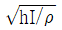
- rhI
(정답률: 알수없음)
26. 이안류의 성질에 대한 설명 중 틀린 것은?
- 외해로부터 규칙적인 너울이 정선에 거의 직각으로 입사할 때 생긴다.
- 해저경사가 급한 해안에서 잘 발생한다.
- 이안류와 풍속과의 상관은 적으나 풍향과의 상곤은 크다.
- 이안류는 저층류(under flow)와는 그 성질이 다르다.
(정답률: 알수없음)
27. 밀도가 ρ인 유체가 수로경사 I인 수로를 수심 H로 흐르고 있을 때 마찰속도(u*)는?
- ρHI
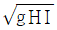
- ρgHI
- gHI
(정답률: 알수없음)
28. 월조(月潮)간격에 대한 설명으로 옳은 것은?
- 보름이 지난 후 다름 보름까지의 시간을 말한다.
- 달이 관측지 자오선을 경과한 이후의 시간을 각도로 표현한 것이다.
- 달이 관측지 자오선을 경과한 후 고조 또는 저조가 나타나기까지의 시간을 말한다.
- 달에 의해 발생하는 분조들의 주기차를 각도로 표현한 것이다.
(정답률: 알수없음)
29. 조위관측을 위한 검조기의 형식으로 적합하지 않은 것은?
- float형
- 압력식
- fuffler형
- accelerometer형
(정답률: 알수없음)
30. 유체 중 질량농도의 확산을 설명하는 기본 물리법칙은?
- Fick의 법칙
- Lagrange의 법칙
- Newton의 법칙
- Froude의 법칙
(정답률: 알수없음)
31. 직경이 비교적 작은 원형 실린더에 작용하는 파랑하중이 최대가 될 때의 파의 위상은?
- 파정(crest)
- 파저(trough)
- 파면이 정수면으로 내려갈 때 파저
- 파면이 정수면 위로 올라갈 때 파저
(정답률: 알수없음)
32. 쇄파대 주위의 평균 수위상승(wave set-up) 및 저하(wave set-down)에 관한 설명으로 옳은 것은?
- Radiation 응력은 수위의 감소와 함께 증대한다.
- 쇄파하기 전까지의 평균수위는 상승한다.
- 쇄파대 내에서의 평균수위는 감소한다.
- 평균수위의 상승 및 저하는 Radiation 응력의 변화와 관계없다.
(정답률: 알수없음)
33. 미소진폭파 이론에 천해역에서의 파속은? (단, h=수심, T=주기, L=파장, g=중력가속도)
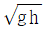
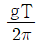
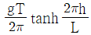
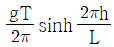
(정답률: 알수없음)
34. 해양구조물에 작용하는 파랑 하중의 특성을 가장 잘 나타내는 무차원수는?
- Frounde수
- Reynolds수
- Weber수
- Keulegan-Carpenter수
(정답률: 알수없음)
35. 분산의 흐름을 정의하는데 있어서 주요 요소가 아닌 것은?
- 시간의 변동
- 물질의 종류
- 투입점 위치
- 단면의 크기
(정답률: 알수없음)
36. 기하학적 상사조건에 포함되지 않는 것은?
- 길이
- 질량
- 면적
- 부피
(정답률: 알수없음)
37. 우리나라 해도 수심의 기준면은?
- 평균 해면 + 4대 분조 진폭의 합
- 평균 해면 – 대조차
- 평균 해면 – 4대 분조 진폭의 합
- 평균 해면 + 대조차
(정답률: 알수없음)
38. 파고 0.6m인 파가 수심 10m의 운하에서 발생하엿다. 이때 물입자의 최대유속 Umax는? (단, 파의 주기는 30초 이다.)
- 0.6 m/sec
- 0.45 m/sec
- 0.3 m/sec
- 0.15 m/sec
(정답률: 알수없음)
39. 부유사의 체적 농도가 0.01% 일 때 부유사의 농도는?
- 2.65 ppm
- 2650 ppm
- 26.5 ppm
- 265 ppm
(정답률: 알수없음)
40. 지름 40cm 인 큰 밸브를 통해 0.8 m3/sec 의 물이 흐르는 유동을 연구하기 위한 모형실험을 수행하려 한다. 모형에서는 원형에서와 같은 온도의 물을 사용한다. 모형과 원형 사이에는 기하학적 상사가 완전히 이루어지고, 모형의 지름은 5cm 이다. 모형에서 필요한 유량은 얼마인가?
- 0.04 m3/sec
- 0.08 m3/sec
- 0.1 m3/sec
- 0.12 m3/sec
(정답률: 알수없음)
3과목: 해양구조공학
41. 일반적으로 단면 2차 극모멘트(Ip)와 단면2차 모멘트(Ix 또는 Iy)와의 관계가 옳은 것은?
- Ip= Ix - Iy
- Ip= Ix + Iy
- Ip= Iy - Ix
- Ip= 2Ix = 2Iy
(정답률: 알수없음)
42. 사석구조물과 같은 경사식 해안구조물의 장점 중 옳은 것은?
- 반사파고 및 소상고(run-up height)가 크다.
- 투과파를 허용한다.
- 이용가능한 수역면적이 넓다.
- 연약지반에서도 쉽게 건설할 수 있다.
(정답률: 알수없음)
43. 그림과 같이 강체인 AB부재가 D점을 중심으로 회전이 가능할 때 A단에 100t의 하중이 작용한다. 이 때 BC 강선에 작용하는 응력의 크기는? (단, BC 강선의 단면적은 6cm2 이다.)
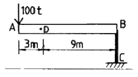
- 1.3 t/cm2
- 2.6 t/cm2
- 4.5 t/cm2
- 5.6 t/cm2
(정답률: 알수없음)
44. 잔교의 해석 및 설계 시 고려할 사항 중 틀린 것은?
- 나무팔뚝 잔교는 내구성이 부족하므로 소형잔고에 이용된다.
- 강철 말뚝잔교는 연약지반에도 적합하다.
- 잔교의 말뚝단면 응력계산은 축방향력만을 받는 것으로 생각한다.
- 잔교의 기초부분에는 세굴의 방지를 위한 보호가 필요하다.
(정답률: 알수없음)
45. 혼성제 직립부의 안전성 해석에 있어서 활동(滑動)에 관한 식 중 옳은 것은? (단, P는 제체에 작용하는 파력의 수평분력, F는 안전율로 F≧1.2 이며, W는 직립부의 자중에서 부력과 양압력을 뺀 무게, μ는 직립부의 저면마찰계수이다.)
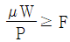
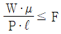
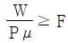
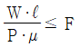
(정답률: 알수없음)
46. 고장력 볼트의 이음방법 중 교량 구조에 가장 많이 쓰이는 것은?
- 마찰접합
- 인장접합
- 지압접합
- 용접접합
(정답률: 알수없음)
47. 콘크리트 해양구조물의 장점이 아닌 것은?
- 승무원과 시설에 안전성이 크다.
- 철구조물에 비해 초기건조비가 싸다.
- 수중부의 유지보수비가 싸다.
- 철제 riser들의 충격과 부식방지가 가능하다.
(정답률: 알수없음)
48. 사각형 단면의 보에서 전단응력의 변화 형태는?
- 일정
- 경사직선
- 2차 포물선
- 3차 곡선
(정답률: 알수없음)
49. Stokes파 이론에 대한 설명으로 맞는 것은?
- 구조물 설계의 최종단계에서 검토용으로 주로 사용된다.
- 선형파이론(linear wave theory)라고도 부른다.
- 쇄파(breaking wave)에 대한 해석에 사용된다.
- 파도의 형상을 정현파(sine wave) 하나로 가정한다.
(정답률: 알수없음)
50. 해양 계류시설(sea berth)에 대한 내용이 아닌 것은?
- 곶이나 섬으로 둘러싸인 정온한 해면 또는 비교적 정온한 만 안쪽에 설치되는 것이 일반적이다.
- 원유 탱커의 보유 및 하역용 해양계류시설의 경우 만의 중앙부에도 건설된다.
- 고정식과 부표식이 있다.
- 수심이 깊을 때는 고정식이 부표식보다 경제적이다.
(정답률: 알수없음)
51. 하중, 전단력, 굽힘모멘트의 관계가 옳은 것은?
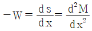
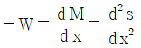
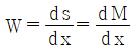
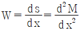
(정답률: 알수없음)
52. 고정식 구조물이지만 필요시 이동이 가능하여 주로 시추용으로 많이 사용되는 해양구조물은?
- 갑판승강식 구조물(jack-up rig)
- 콘크리트 중력식 구조물
- 자켓 구조물(jacket platform)
- 인장각식 구조물(tension leg platform)
(정답률: 알수없음)
53. 다음 그림과 같은 평면구조물의 부정정차수는?
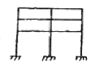
- 6차
- 12차
- 15차
- 18차
(정답률: 알수없음)
54. 다음과 같은 트러스의 A점에서의 수직처짐의 크기는? (단, 각 부재의 탄성계수는 2×107 t/m2 이고, 단면적은 0.01m2 이다.)
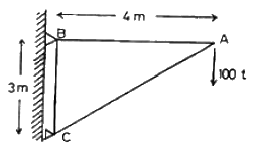
- 1.2 cm
- 2.4 cm
- 3.6 cm
- 4.8 cm
(정답률: 알수없음)
55. 직립방파제에 작용하는 중복파압의 산정식에 있어서 Sainflou의 간략식 중 틀린 것은?
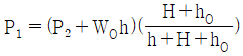
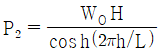
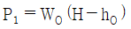
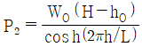
(정답률: 알수없음)
56. 방파제의 구조 양식이 아닌 것은?
- 경사제
- 혼성제
- 도류제
- 직립제
(정답률: 알수없음)
57. 이안제의 배치에 있어서 유의해야 할 사항으로 옳지 않은 것은?
- 연안표사를 차단하기 위해서는 쇄파대 내에 설치한다.
- 1기의 길이는 경험적으로 이안거리의 1.5배 정도로 한다.
- 연안표시량이 많은 곳에서는 표사하류 쪽의 침식에 대한 대책이 필요하다.
- 천단고는 월파에 의한 전달파고는 허용치를 고려하여 결정한다.
(정답률: 알수없음)
58. 다음과 같은 구조물이 지지할 수 있는 최대 모멘트의 크기 M 은? (단, 허용 휨응력은 1.5 t/cm2 이다.)
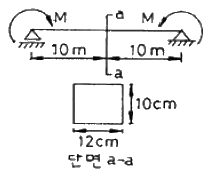
- 3 t.m
- 6 t.m
- 9 t.m
- 12 t.m
(정답률: 알수없음)
59. 직사각형 단면 ABCD의 핵거리 EG, FH를 옳게 나타낸 것은? (단, 보기는 EG, FH의 순이다.)
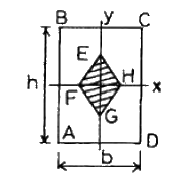
- h/6, b/6
- h/5, b/5
- h/4, b/4
- h/3, b/3
(정답률: 알수없음)
60. 반경 r인 원형단면에서 단면 2차 모멘트에 대한 회전반경은?
- 0.5r
- 0.707r
- r
- 1.414r
(정답률: 알수없음)
4과목: 측량학
61. 해저지질을 조사하는 방법 중 직접조사방법은?
- 음파
- 중력
- 지자기
- 그랩(grab)방식
(정답률: 알수없음)
62. 사진측량의 특성 중 틀린 것은?
- 정량적 및 정성적인 측량이 가능하다.
- 움직이는 대상물에 대한 측량이 가능하다.
- 축척변경이 어려우므로 4차원 측량이 불가능하다.
- 분업화에 의한 작업능률성이 높다.
(정답률: 알수없음)
63. 내부표정에 대한 설명 중 옳지 않은 것은?
- 사진의 중심표정을 해야 한다.
- 사진의 주점거리를 맞추어야 한다.
- 축척만을 바로 잡아야 한다.
- 상호표정을 하기 전에 해야 한다.
(정답률: 알수없음)
64. 평균 해수면을 육지까지 연장하여 지구 전체를 둘러쌓은 가상 곡선은?
- 묘유선
- 지오이드
- 측지선
- 항정선
(정답률: 알수없음)
65. 정밀도를 표현하는 방법으로 각 측정값과 그의 평균값의 차의 절대값에 대한 산술평균값으로 구하는 것은?
- 표준편차
- 표준오차
- 확률오차
- 평균오차
(정답률: 알수없음)
66. 바다의 기본도에 해당되지 않는 것은?
- 1 : 200000
- 1 : 50000
- 1 : 10000
- 1 : 5000
(정답률: 알수없음)
67. 일반적으로 중축척 지형도에서 등고선의 간격은 얼마로 하는가?
- 축척분모의 1/300 ~ 1/500
- 축척분모의 1/1000 ~ 1/1500
- 축척분모의 1/2000 ~ 1/2500
- 축척분모의 1/4000 ~ 1/5000
(정답률: 알수없음)
68. 천해(수심 약 200m 이내)의 저질과 가장 거리가 먼 것은?
- 점토
- 적니
- 침니
- 모래
(정답률: 알수없음)
69. 지오이드(Geoid)에 대한 설명 중 틀린 것은?
- 지오이드 성에서는 위치에너지가 0 이다.
- 등포텐셜면의 일종
- 지오이드는 육지에서 타원체면 아래 존재
- 연직선 중력방향에 직교
(정답률: 알수없음)
70. 지자기 측량의 3요소에 해당하는 것은?
- 편각, 복각, 수평분력
- 수평각, 수직각, 경사각
- 방위각, 방위, 평면각
- 경도, 위도, 황도
(정답률: 알수없음)
71. 양단면의 면적 A1 = 48m2, A2 = 27m2, 양단면간의 거리 L = 32m 라면 중앙단면법에 의한 체적은?
- 900 m3
- 1074 m3
- 1200 m3
- 1247 m3
(정답률: 알수없음)
72. 비행고도 6400m 로 촬영하였을 때, 사진 연직점에서의 거리가 70mm, 평지에서의 비고 200m인 지점의 비고에 의한 변위량을 구하면?
- 1.0mm
- 1.5mm
- 2.2mm
- 2.8mm
(정답률: 알수없음)
73. 다각측량에서 교각법으로 진행방향의 우회각을 관측하였을 때의 방위각을 구하는 공식은?
- 어떤 측선의 방위각 = 전측선의 방위각 + 180° + 그 측선의 교각
- 어떤 측선의 방위각 = 전측선의 방위각 - 180° - 그 측선의 교각
- 어떤 측선의 방위각 = 전측선의 방위각 + 180° - 그 측선의 교각
- 어떤 측선의 방위각 = 전측선의 방위각 - 180° + 그 측선의 교각
(정답률: 알수없음)
74. 해저지형측량에서 수심이 8000m 이고 음파의 속도가 1600 m/sec이면 발사음이 몇 초 후에 수신되는가?
- 8초
- 10초
- 12초
- 14초
(정답률: 알수없음)
75. 해상위치측량방법에서 중거리용 전파측량체계인 것은?
- Hi-Fix
- Raydist
- Loran
- Consol
(정답률: 알수없음)
76. 기본적으로 해저의 후방산란 방향(back scatter rever-beration)의 변화를 기록하여 이를 판독함으로써 해저지질을 분석하는 방법은?
- 측사식 반사법
- 연속식 반사법
- 재래식 반사법
- 굴절법
(정답률: 알수없음)
77. 음속도를 V, 주파수 F, 수심을 d라 할 때 수심 d를 계산하는 식은?
- d = VF
- d = 1/2VF
- d = V/F
- d = F/V
(정답률: 알수없음)
78. DOP(dilution of precision)에 대한 설명으로 틀린 것은?
- 수평, 수직, 시간 및 위치에 대한 정밀도 저하율이 발생한다.
- DOP 수치와 측량의 정도와는 무관하다.
- DOP 수치가 적을수록 측량성과의 정밀도가 좋다.
- DOP는 위성의 배치상태에 따라 변화한다.
(정답률: 알수없음)
79. 수심측량 시 수심경정의 바-체크(Bar-check)법에 대하여 옳은 것은?
- 심도 15m 미만은 1m 마다, 15m 이상은 2m 마다 측정
- 심도 15m 미만은 2m 마다, 15m 이상은 5m 마다 측정
- 심도 31m 미만은 1m 마다, 31m 이상은 2m 마다 측정
- 심도 31m 미만은 2m 마다, 31m 이상은 5m 마다 측정
(정답률: 알수없음)
80. 바체크(bar-check) 설명 중 옳은 것은?
- 항만 및 연안측량 등 천해의 측량에 적당하다.
- 해수 온도를 관측한다.
- 해수 중 음속을 보정하기 위해 실시한다.
- 관측된 수치는 스케일로 보정한다.
(정답률: 알수없음)
5과목: 재료공학
81. 콘크리트의 인장강도를 측정하기 위한 시험 중 실시가 어려운 직접적인 시험 대신 택하는 간접적인 방법은?
- 할열시험
- 탄성종파시험
- 코어(core)채취시험
- 비파괴시험
(정답률: 알수없음)
82. 알루미나 시멘트의 특징이 아닌 것은?
- 초조강성을 가진다.
- 산, 염류, 해수 등의 화학적 침식에 대한 저항성이 크다.
- 발열량이 적으며 양생에도 별다른 주의가 필요 없다.
- 포틀랜드 시멘트와 혼용해서 사용하면 순결성이 된다.
(정답률: 알수없음)
83. 수밀콘크리트의 시공에 있어서 공기량의 최대값은?
- 4%
- 5%
- 6%
- 7%
(정답률: 알수없음)
84. 수종불분리성 콘크리트에 있어서 공기중제작공시체의 제조목적에 가장 적합한 것은?
- 초기재령 수중불분리성 콘크리트의 효율적 양생관리를 위해
- 수중불분리성 콘크리트의 분리저항성 평가를 위해
- 수중 타설이 어려운 경우 시공성 확보를 위해
- 조기강도가 높은 수중콘크리트의 제조를 위해
(정답률: 알수없음)
85. 다음 중 유기재료에 해당하는 것은?
- 아스팔트(asphalt)
- 콘크리트(concrete)
- 스테인레스 스틸(stainless steel)
- 석재(石材)
(정답률: 알수없음)
86. 아래 그림과 같이 길이가 ℓ인 단면이 일정한 부재가 있는 경우 자중에 의해 축적된 스트레인 에너지(strain energy)값은? (단, 부재의 비중은 B, 부재의 단면적은 A 이다.)
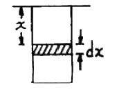
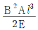
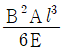
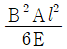
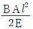
(정답률: 알수없음)
87. 콘크리트의 워커빌리티 측정법이 아닌 것은?
- 슬럼프시험
- 흐름시험
- 리몰딩시험
- 입도시험
(정답률: 알수없음)
88. 그림과 같은 직4각형 단면에서 x-x축에 대한 단면 2차 모멘트는 어떻게 표현할 수 있는가?
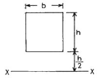
- (13/12)bh3
- bh3/3
- (15/12)bh3
- (7/12)bh3
(정답률: 알수없음)
89. 수중 콘크리트에 사용하는 수중불분리성 혼화제의 근본적인 역할은?
- 강재의 보호
- 유동성의 증대
- 단위수량의 감소
- 점성의 증가
(정답률: 알수없음)
90. 캐비테이션 부식 방지방법으로 옳지 않은 것은?
- 수압의 차이가 최소가 되도록 설계한다.
- 내식성이 강한 재료를 설계한다.
- 재료의 표면을 불균일하게 하여 기포를 우선적으로 생기게 한다.
- 고무 등으로 금속부분을 피복하여 부식을 방지한다.
(정답률: 알수없음)
91. 직경 1cm의 강봉을 인장응력 210kg/cm2으로 당길 때 0.02cm가 늘어났다면 이 강봉의 처음 길이는? (단, 강봉의 탄성계수는 2100000 kg/cm2 이다.)
- 2.0m
- 2.m
- 3.0m
- 3.5m
(정답률: 알수없음)
92. 해양구조물에 적합한 폴리머(polymer) 콘크리트에 관한 설명 중 옳지 못한 것은?
- 외관이 아름답고 여러 강도가 우수하며 특히 휨강도가 크다.
- 방수성, 동결융해에 대한 저항성, 방식성 등이 우수하다.
- 건조수축, 블리딩, 재료분리가 작으나 자중이 증가한다.
- 양생기간을 단축시켜 조기에 고강도의 콘크리트를 얻을 수 있다.
(정답률: 알수없음)
93. 콘크리트의 성질을 개선할 목적으로 사용되는 혼화재료 중 시멘트 입자에 습윤, 분산작용을 함으로써 콘크리트의 워커빌리티를 향상시키는 것은?
- AE제
- 감수제
- 촉진제
- 플라이 에쉬
(정답률: 알수없음)
94. 정하중으로 파괴를 일으키는 응력보다 훨씬 낮은 응력으로도 반복하여 하중을 가하면 재료가 파괴하게 된다. 이러한 것을 조사하는 시험법을 무엇이라고 하는가?
- 크리프 시험
- 마모 시험
- 전단 시험
- 피로 시험
(정답률: 알수없음)
95. 트래미를 사용하여 일반 수중 콘크리트를 타설할 때 슬럼프 값으로 가장 적합한 것은?
- 50 ~ 100 mm
- 100 ~ 150 mm
- 130 ~ 180 mm
- 180 ~ 210 mm
(정답률: 알수없음)
96. 강철재 녹방지용 페인트에 대한 성질 중 틀린 것은?
- 습기에 대해서 침투성이어야 한다.
- 될 수 있는 한 공기를 투과시키지 않아야 한다.
- 강철재에 화학적 작용이 미치지 않아야 한다.
- 충분한 탄력성이 있으며 견고도가 크고 마찰 충격 등에 감당할 수 있어야 한다.
(정답률: 알수없음)
97. 다음 탄성계수들의 관계를 나타낸 것 중 옳은 것은? (m : 푸아송수, E : 영계수, G : 전단탄성계수)
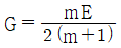
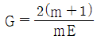
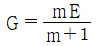
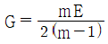
(정답률: 알수없음)
98. 그림과 같은 연강재의 응력-변형률곡선에서 외력을 제거했을 때 잔류변형이 거의 남지 않고 원래상태 0 으로 돌아가는 점은?
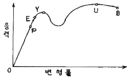
- P(비례한계)
- E(탄성한계)
- Y(항복점)
- U(극한강도)
(정답률: 알수없음)
99. 화합탄소의 형성을 촉진시키며, 흑연의 석출을 방해하고 철의 경도를 증가시키며, 수축량을 증가시키는 것은?
- 탄소
- 규소
- 인
- 망간
(정답률: 알수없음)
100. 해양콘크리트 제조에 사용되는 혼화재료 중 수밀성이 높고, 해수의 화학작용에 대한 내구성을 크게 하기 위하여 사용되는 것은?
- 유동화제
- 폴리머
- 플라이 애쉬
- AE제
(정답률: 알수없음)